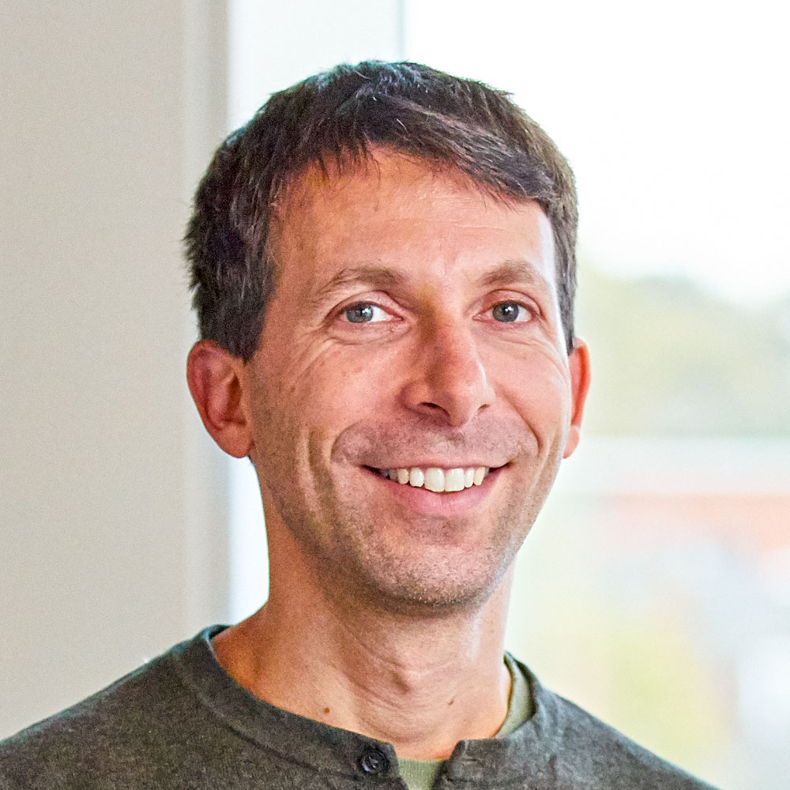
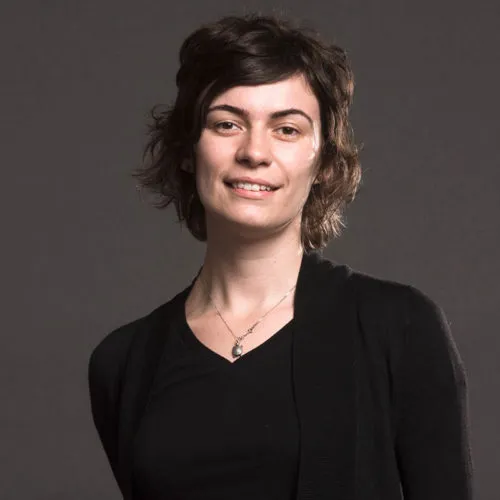
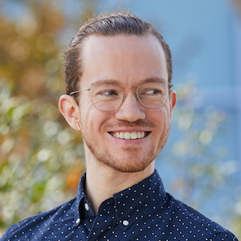
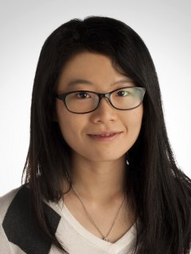
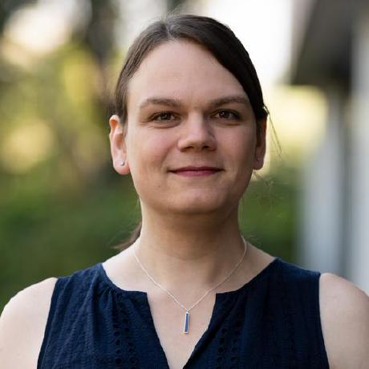
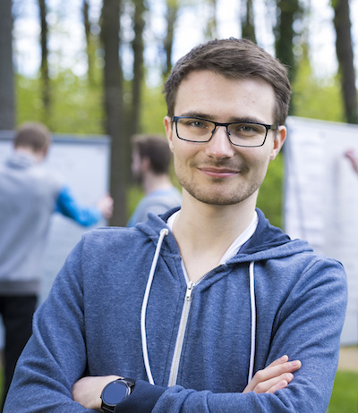

|  | David Silver is a principal research scientist at DeepMind and a professor at University College London. David’s work focuses on artificially intelligent agents based on reinforcement learning. David led pioneering deep RL works including the DQN, AlphaGo, AlphaZero, and AlphaStar projects. His work has been recognised by the Marvin Minsky award, Mensa Foundation Prize, and Royal Academy of Engineering Silver Medal. |
|  | Anca Dragan is an associate professor in the EECS Department at UC Berkeley. Her goal is to enable robots to work with, around, and in support of people. She runs the InterACT Lab, with the focus on algorithms for human-robot interaction that are aligned with human actual preferences for the robot to do. She also serves on the steering committee for the Berkeley AI Research (BAIR) Lab and as a co-PI of the Center for Human-Compatible AI. Her work been honored by the Sloan Fellowship, MIT TR35, the Okawa award, an NSF CAREER award, and the PECASE award. |
|  | Brandon Amos is a research scientist at Facebook AI Research (FAIR) in NYC. He focuses on integrating structural information and domain knowledge into learning systems to represent non-trivial reasoning operations. A key theme of his work in this space involves the use of optimization as a differentiable building block in larger architectures that are learned end-to-end. |
|  | Mengdi Wang is an associate professor at Princeton University. Mengdi’s research group studies the statistical and algorithmic foundation of reinforcement learning and sequential decision-making, as well as their applications in finance, operations research and biomedical research. He was previously a full professor at UBC and University of Oxford. In his own words, he researches intelligence to understand what we are, and to harness it wisely. She is currently serving as an associate editor for Operations Research. She received the Young Researcher Prize in Continuous Optimization of the Mathematical Optimization Society in 2016, the Princeton SEAS Innovation Award in 2016, the NSF Career Award in 2017, the Google Faculty Award in 2017, and the MIT Tech Review 35-Under-35 Innovation Award (China region) in 2018. |
|  | Erin Talvitie is an associate professor at Harvey Mudd College. |
|  | Louis Kirsch is a PhD with Jürgen Schmidhuber at IDSIA working on Meta Reinforcement Learning agents. His long-term research goal is to create RL agents that learn their own learning algorithm, making them truly general in the AGI sense. |